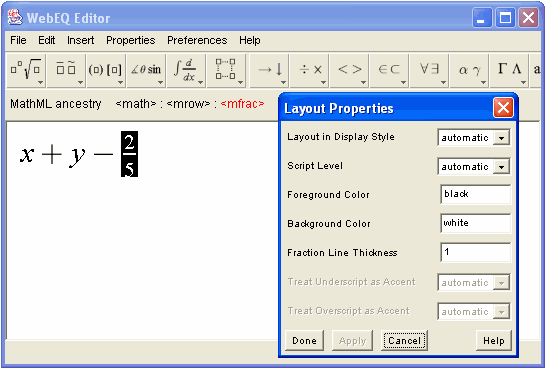

The MathML Ancestry is the status area displayed just below the toolbar. The Ancestry is there to show you at a glance the nesting of the MathML structure at the cursor location, and to give you an easy way to select parts of the equation containing the cursor.
Since all MathML equations consist of templates nested inside a <math> element, the ancestry always shows the <math> element on the left. Intermediate MathML templates are listed in order of nesting, with the innermost MathML template or symbol at the cursor location indicated on the far right.
When there are too many levels of nesting to display all at once, the Ancestry shows dots on the right and/or left edge of the display. Clicking on the dots scrolls the display in the corresponding direction.
As you move the mouse, the Ancestry automatically updates to reflect the nesting at the current cursor position. Also, when you select part of an equation in the editing area, the corresponding template label in the Ancestry will be highlighted.
When you mouse over one of the MathML templates in the Ancestry, it will become highlighted in red. By clicking a highlighted template, you can quickly and accurately select the corresponding part of the equation in the WebEQ Editor window.
By double-clicking an Ancestry label, you can highlight the corresponding area of the current equation and simultaneously open the default Properties panel for the selection. Each kind of MathML template has a default Properties panel, depending on what MathML properties it supports. Since changes to a Properties panel only affect the current selection, this is a very convenient way to edit properties. See How Properties Work for more details.

When a selection contains several kinds of templates, so that several Properties panels would apply, you have to open the other Properties panels by hand from the Properties menu. Only the default panel can be opened by double-clicking.